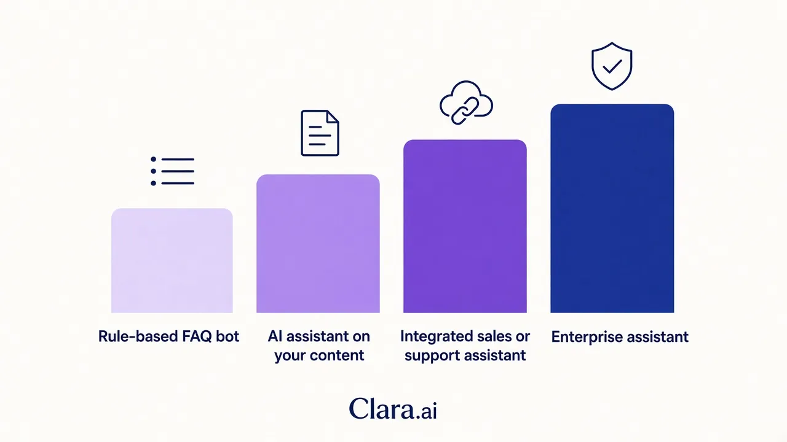

An AI chatbot in the UAE costs from about AED 6,000 for a basic scripted bot to AED 150,000 or more for an assistant that answers from your own content and connects to your systems, based on public 2026 vendor guides. Running costs, WhatsApp fees and 5% VAT usually sit on top. The real price depends on scope, not the word "chatbot".
A clinic owner in Dubai holds three chatbot quotes. One says AED 12,000. One says AED 90,000. One says AED 20,000 a month. All three are called "AI chatbot", and none of them is wrong. They price different things. This guide shows the public price ranges, explains what moves a quote, and gives you questions to compare vendors fairly. It does not quote Clara AI prices.
Public UAE guides group chatbots into four bands. Their figures differ, so treat them as market indicators and not as quotes.
| Type | What you get | Public build range (AED) |
|---|---|---|
| Rule-based FAQ bot | Fixed menus and 20 to 50 set answers, one channel | 6,000 to 25,000 (one guide); 15,000 to 45,000 (another) |
| AI assistant on your content | Answers from your documents, website widget, English and Arabic, handover to a person | 25,000 to 150,000 |
| Integrated sales or support assistant | Web and WhatsApp, CRM or booking link, lead qualification, analytics | 150,000 to 300,000 |
| Enterprise assistant | Several internal systems, access roles, audit trails, private hosting | 300,000 to 800,000 and above |
The first three rows come from a Dubai cost guide by Spire Digi that consolidates ranges from UAE vendors in 2026. A second guide, from Korvax, uses different bands: AED 15,000 to 45,000 for rule-based, AED 45,000 to 150,000 for an NLP assistant with Arabic and CRM links, and AED 150,000 to 400,000 for a document-based assistant. The Spire Digi guide says the sources disagree widely at the low end, and that the scope document, not the label, sets the price.
Both guides state ranges before 5% VAT and before recurring costs. Check the date and the VAT basis on every quote you hold.

The build price is one part of the bill. Four other lines decide your first-year total.
If you also want voice, an AI calling agent is a separate line. Ask for it to be quoted on its own so the chatbot price stays clear. Our post on an AI calling agent for Dubai real estate shows how the two work together.
Six things move the number most. Ask each vendor about all six.
It can be, for one narrow job. A scripted bot that shares opening hours, a menu or a booking link is fine for a small shop with a few repeat questions. It breaks when a customer words something differently, and it cannot read your catalogue or update your CRM.
It is not worth it if you want to qualify leads, answer detailed product questions or handle Arabic and English in the same chat. A human team then picks up every miss. Compare the cheap quote against the hours your staff will still spend.
Our India guide, How much does an AI chatbot cost in India?, shows the same three-way split between rule-based, platform and custom builds in rupees.
Put every quote on the same basis. Ask each vendor the same questions:
If two quotes differ widely, the answer is almost always in questions 2, 5 and 7.
Clara AI builds custom AI chatbots for web and WhatsApp, trained on your own content and connected to your systems. Our chatbots and calling agents work in English, Hindi and Arabic. We start by mapping your workflow and measuring where leads or questions get missed, then build on your real data, run beside your team, and keep a person in the loop for sensitive chats. We stay on to manage and improve it.
For a Gulf healthcare example of the same work, see our post on AI chatbot for hospital appointment booking. Clara AI is a team of 14 that builds AI agents for 19 businesses, in India and the Gulf. We scope each build after seeing your material, so this article quotes no Clara AI prices. We aim to show you a first demo within 7 days of receiving it.
Chatbots are not our only agents. If your buyers are on LinkedIn, our AI LinkedIn Outreach Agent finds the right people, sends personal messages and passes replies to you on WhatsApp. For one B2B client, Haique Surfaces, it reached 345 people with 107 accepting (31%) and 14 replies, as of 21 Oct 2026. If you want steady search traffic, our AI SEO Agent writes, publishes and tracks a blog post for you every day.